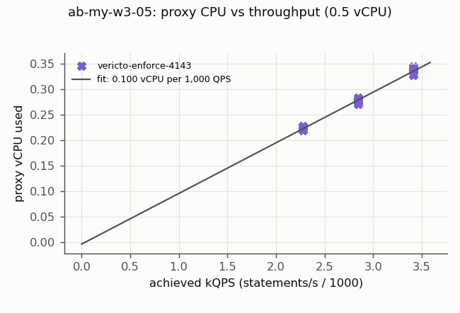
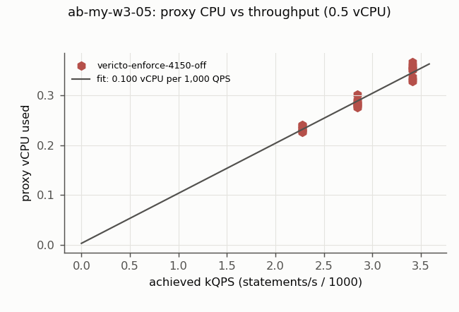
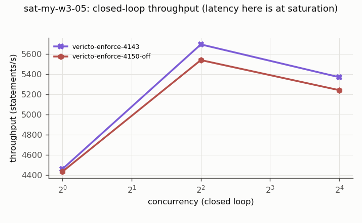
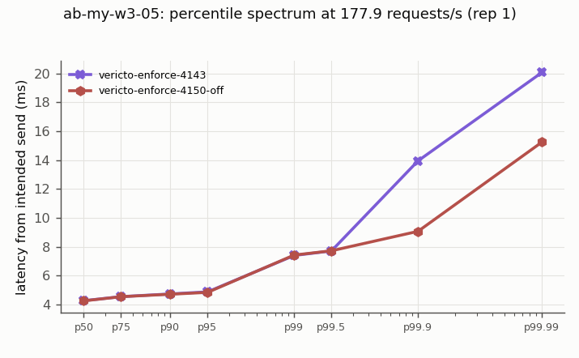
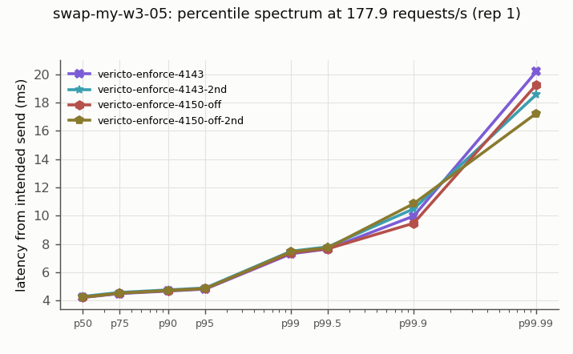

# vericto-bench report: m2-mysql-ab
| Run | Profile | Topology | Proxy image | Harness commit | Started | Finished |
| --- | --- | --- | --- | --- | --- | --- |
| bench-2026-11-m2-mysql-ab-1 | quick | two-host | `docker.io/vericto/vericto-proxy:4.14.2@sha256:0446e4357183cf676461c2eac42377d0e331ad19d044d12cde1045608785eb6b` | `6533a02` | 2026-10-22T22:01:09.058375+00:00 | 2026-10-22T23:50:38.032160+00:00 |
Cells: 73 recorded, 62 used, 8 invalid (listed at the end, not used).
## Added latency (open loop, from intended send time; target minus direct, paired)
| Curve | Target | Rate/s | % of S | n | added p50 ms [95%] | added p99 ms [95%] | added p99.9 ms [95%] | Note |
| --- | --- | --- | --- | --- | --- | --- | --- | --- |
## Every cell
| Cell | Status | Achieved/s | p50 ms | p99 ms | p99.9 ms | max ms | proxy vCPU | max aggregate Mbps |
| --- | --- | --- | --- | --- | --- | --- | --- | --- |
| sat-my-w3-05.vericto-enforce-4150-off.c1.rep1 | ok | 277.2 | 3.493 | 6.371 | 6.815 | 15.663 | 0.432 | 486.0 |
| sat-my-w3-05.vericto-enforce-4143.c1.rep1 | ok | 278.8 | 3.475 | 6.383 | 6.871 | 15.543 | 0.422 | 490.6 |
| sat-my-w3-05.vericto-enforce-4150-off.c4.rep1 | ok | 346.1 | 5.791 | 56.607 | 60.127 | 72.831 | 0.500 | 618.3 |
| sat-my-w3-05.vericto-enforce-4143.c4.rep1 | ok | 355.8 | 5.627 | 55.391 | 59.295 | 68.927 | 0.500 | 631.0 |
| sat-my-w3-05.vericto-enforce-4150-off.c16.rep1 | ok | 327.1 | 30.527 | 81.919 | 92.543 | 94.783 | 0.500 | 604.5 |
| sat-my-w3-05.vericto-enforce-4143.c16.rep1 | ok | 335.1 | 29.023 | 81.343 | 89.343 | 94.143 | 0.500 | 606.3 |
| ab-my-w3-05.vericto-enforce-4143.r50.rep0.netprobe | ok | 50 | 4.339 | 5.203 | 7.483 | 7.483 | 0.081 | 86.5 |
| ab-my-w3-05.vericto-enforce-4143.r177.9.rep1 | ok | 177.9 | 4.259 | 7.391 | 9.735 | 20.303 | 0.284 | 306.9 |
| ab-my-w3-05.vericto-enforce-4150-off.r177.9.rep1 | ok | 177.9 | 4.247 | 7.415 | 8.575 | 16.607 | 0.283 | 312.4 |
| ab-my-w3-05.vericto-enforce-4143.r213.5.rep1 | ok | 213.5 | 4.199 | 7.623 | 11.199 | 22.623 | 0.329 | 368.9 |
| ab-my-w3-05.vericto-enforce-4150-off.r213.5.rep1 | ok | 213.5 | 4.283 | 7.715 | 9.903 | 22.671 | 0.353 | 368.6 |
| ab-my-w3-05.vericto-enforce-4143.r142.3.rep1 | ok | 142.3 | 4.235 | 7.131 | 7.931 | 20.399 | 0.221 | 246.7 |
| ab-my-w3-05.vericto-enforce-4150-off.r142.3.rep1 | ok | 142.3 | 4.291 | 7.163 | 8.231 | 15.199 | 0.229 | 246.6 |
| ab-my-w3-05.vericto-enforce-4150-off.r142.3.rep2 | ok | 142.3 | 4.275 | 7.207 | 8.391 | 16.071 | 0.228 | 246.7 |
| ab-my-w3-05.vericto-enforce-4143.r142.3.rep2 | ok | 142.3 | 4.243 | 7.155 | 8.479 | 19.247 | 0.222 | 254.0 |
| ab-my-w3-05.vericto-enforce-4150-off.r177.9.rep2 | ok | 177.9 | 4.219 | 7.463 | 11.415 | 21.807 | 0.277 | 308.5 |
| ab-my-w3-05.vericto-enforce-4143.r177.9.rep2 | ok | 177.9 | 4.211 | 7.375 | 11.327 | 19.695 | 0.277 | 307.5 |
| ab-my-w3-05.vericto-enforce-4150-off.r213.5.rep2 | ok | 213.5 | 4.303 | 7.787 | 12.167 | 21.999 | 0.357 | 368.6 |
| ab-my-w3-05.vericto-enforce-4143.r213.5.rep2 | ok | 213.5 | 4.247 | 7.651 | 12.423 | 24.911 | 0.340 | 369.1 |
| ab-my-w3-05.vericto-enforce-4143.r213.5.rep3 | ok | 213.5 | 4.275 | 7.791 | 9.775 | 23.407 | 0.345 | 368.8 |
| ab-my-w3-05.vericto-enforce-4150-off.r213.5.rep3 | ok | 213.5 | 4.199 | 7.603 | 10.959 | 23.487 | 0.337 | 368.7 |
| ab-my-w3-05.vericto-enforce-4143.r142.3.rep3 | ok | 142.3 | 4.223 | 7.231 | 8.107 | 19.103 | 0.220 | 252.9 |
| ab-my-w3-05.vericto-enforce-4150-off.r142.3.rep3 | ok | 142.3 | 4.323 | 7.251 | 8.223 | 15.247 | 0.232 | 246.4 |
| ab-my-w3-05.vericto-enforce-4143.r177.9.rep3 | ok | 177.9 | 4.215 | 7.355 | 8.455 | 18.671 | 0.278 | 307.6 |
| ab-my-w3-05.vericto-enforce-4150-off.r177.9.rep3 | ok | 177.9 | 4.287 | 7.431 | 11.135 | 21.327 | 0.288 | 307.5 |
| ab-my-w3-05.vericto-enforce-4150-off.r142.3.rep4 | ok | 142.3 | 4.347 | 7.283 | 8.063 | 14.511 | 0.240 | 246.8 |
| ab-my-w3-05.vericto-enforce-4143.r142.3.rep4 | ok | 142.3 | 4.291 | 7.163 | 8.111 | 18.639 | 0.226 | 246.7 |
| ab-my-w3-05.vericto-enforce-4150-off.r177.9.rep4 | ok | 177.9 | 4.355 | 7.579 | 9.463 | 20.943 | 0.302 | 315.1 |
| ab-my-w3-05.vericto-enforce-4143.r177.9.rep4 | ok | 177.9 | 4.219 | 7.351 | 8.519 | 19.279 | 0.279 | 307.5 |
| ab-my-w3-05.vericto-enforce-4150-off.r213.5.rep4 | ok | 213.5 | 4.263 | 7.739 | 12.455 | 20.879 | 0.351 | 368.4 |
| ab-my-w3-05.vericto-enforce-4143.r213.5.rep4 | ok | 213.5 | 4.215 | 7.679 | 10.575 | 22.239 | 0.337 | 368.6 |
| ab-my-w3-05.vericto-enforce-4143.r177.9.rep5 | ok | 177.9 | 4.227 | 7.455 | 8.647 | 17.599 | 0.279 | 307.4 |
| ab-my-w3-05.vericto-enforce-4150-off.r177.9.rep5 | ok | 177.9 | 4.279 | 7.471 | 8.647 | 23.503 | 0.290 | 307.1 |
| ab-my-w3-05.vericto-enforce-4143.r213.5.rep5 | ok | 213.5 | 4.187 | 7.707 | 9.735 | 24.047 | 0.328 | 368.9 |
| ab-my-w3-05.vericto-enforce-4150-off.r213.5.rep5 | ok | 213.5 | 4.303 | 7.851 | 11.015 | 21.455 | 0.360 | 374.8 |
| ab-my-w3-05.vericto-enforce-4143.r142.3.rep5 | ok | 142.3 | 4.247 | 7.115 | 10.207 | 16.799 | 0.221 | 246.7 |
| ab-my-w3-05.vericto-enforce-4150-off.r142.3.rep5 | ok | 142.3 | 4.327 | 7.263 | 8.295 | 22.975 | 0.233 | 246.7 |
| ab-my-w3-05.vericto-enforce-4150-off.r142.3.rep6 | ok | 142.3 | 4.295 | 7.211 | 9.247 | 17.247 | 0.226 | 246.6 |
| ab-my-w3-05.vericto-enforce-4143.r142.3.rep6 | ok | 142.3 | 4.283 | 7.255 | 8.175 | 20.543 | 0.228 | 246.8 |
| ab-my-w3-05.vericto-enforce-4150-off.r213.5.rep6 | ok | 213.5 | 4.335 | 7.899 | 12.975 | 23.295 | 0.367 | 368.5 |
| ab-my-w3-05.vericto-enforce-4143.r213.5.rep6 | ok | 213.5 | 4.267 | 7.695 | 8.943 | 23.023 | 0.342 | 375.8 |
| ab-my-w3-05.vericto-enforce-4150-off.r177.9.rep6 | ok | 177.9 | 4.255 | 7.415 | 8.671 | 18.959 | 0.283 | 307.5 |
| ab-my-w3-05.vericto-enforce-4143.r177.9.rep6 | ok | 177.9 | 4.195 | 7.347 | 9.199 | 21.055 | 0.272 | 307.3 |
| ab-my-w3-05.vericto-enforce-4143.r213.5.rep7 | ok | 213.5 | 4.235 | 7.707 | 10.247 | 22.991 | 0.339 | 368.9 |
| ab-my-w3-05.vericto-enforce-4150-off.r213.5.rep7 | ok | 213.5 | 4.211 | 7.659 | 11.911 | 23.055 | 0.332 | 369.0 |
| ab-my-w3-05.vericto-enforce-4143.r142.3.rep7 | ok | 142.3 | 4.299 | 7.243 | 8.303 | 21.423 | 0.226 | 246.7 |
| ab-my-w3-05.vericto-enforce-4150-off.r142.3.rep7 | ok | 142.3 | 4.379 | 7.331 | 8.099 | 15.823 | 0.240 | 246.5 |
| ab-my-w3-05.vericto-enforce-4143.r177.9.rep7 | ok | 177.9 | 4.219 | 7.311 | 9.375 | 19.791 | 0.275 | 313.1 |
| ab-my-w3-05.vericto-enforce-4150-off.r177.9.rep7 | ok | 177.9 | 4.215 | 7.319 | 8.767 | 21.359 | 0.281 | 307.3 |
| ab-my-w3-05.vericto-enforce-4150-off.r213.5.rep8 | ok | 213.5 | 4.207 | 7.439 | 9.247 | 18.159 | 0.329 | 368.5 |
| ab-my-w3-05.vericto-enforce-4143.r213.5.rep8 | ok | 213.5 | 4.219 | 7.639 | 10.639 | 19.247 | 0.335 | 368.8 |
| ab-my-w3-05.vericto-enforce-4150-off.r177.9.rep8 | ok | 177.9 | 4.223 | 7.395 | 8.279 | 20.239 | 0.280 | 307.2 |
| ab-my-w3-05.vericto-enforce-4143.r177.9.rep8 | ok | 177.9 | 4.215 | 7.295 | 8.463 | 21.311 | 0.276 | 307.6 |
| ab-my-w3-05.vericto-enforce-4150-off.r142.3.rep8 | ok | 142.3 | 4.383 | 7.339 | 8.279 | 15.487 | 0.241 | 256.6 |
| ab-my-w3-05.vericto-enforce-4143.r142.3.rep8 | ok | 142.3 | 4.259 | 7.127 | 7.883 | 20.191 | 0.225 | 246.6 |
| swap-my-w3-05.vericto-enforce-4143.r50.rep0.netprobe | ok | 50 | 4.311 | 5.351 | 7.207 | 7.207 | 0.078 | 86.5 |
| swap-my-w3-05.vericto-enforce-4143.r177.9.rep1 | ok | 177.9 | 4.223 | 7.311 | 9.407 | 20.895 | 0.279 | 307.5 |
| swap-my-w3-05.vericto-enforce-4143-2nd.r177.9.rep1 | ok | 177.9 | 4.299 | 7.495 | 9.639 | 21.007 | 0.292 | 307.5 |
| swap-my-w3-05.vericto-enforce-4150-off.r177.9.rep1 | ok | 177.9 | 4.239 | 7.379 | 8.943 | 20.271 | 0.285 | 307.7 |
| swap-my-w3-05.vericto-enforce-4150-off-2nd.r177.9.rep1 | ok | 177.9 | 4.247 | 7.447 | 8.743 | 17.471 | 0.284 | 307.1 |
| swap-my-w3-05.vericto-enforce-4150-off-2nd.r177.9.rep2 | ok | 177.9 | 4.327 | 7.523 | 9.895 | 21.247 | 0.297 | 316.5 |
| swap-my-w3-05.vericto-enforce-4150-off.r177.9.rep2 | ok | 177.9 | 4.235 | 7.339 | 8.983 | 21.391 | 0.282 | 307.4 |
| swap-my-w3-05.vericto-enforce-4143-2nd.r177.9.rep2 | ok | 177.9 | 4.279 | 7.471 | 10.743 | 19.295 | 0.289 | 309.1 |
| swap-my-w3-05.vericto-enforce-4143.r177.9.rep2 | ok | 177.9 | 4.279 | 7.379 | 10.999 | 21.791 | 0.290 | 307.6 |
| prof-my-w3-05.vericto-enforce-4143.r50.rep0.netprobe | ok | 50 | 4.827 | 7.579 | 9.471 | 9.471 | 0.120 | 86.6 |
| prof-my-w3-05.vericto-enforce-4143.r177.9.rep1 | ok | 177.9 | 5.619 | 60.735 | 75.071 | 98.879 | 0.412 | 311.9 |
| prof-my-w3-05.vericto-enforce-4150-off.r177.9.rep1 | ok | 177.9 | 5.423 | 53.727 | 65.055 | 76.799 | 0.410 | 317.6 |
| prof-my-w3-05.vericto-enforce-4150-off.r177.9.rep2 | ok | 177.9 | 6.071 | 66.175 | 79.359 | 105.535 | 0.417 | 317.6 |
| prof-my-w3-05.vericto-enforce-4143.r177.9.rep2 | ok | 177.9 | 5.415 | 53.439 | 64.927 | 79.167 | 0.413 | 307.8 |
| prof-my-w3-05.vericto-enforce-4143.r177.9.rep1.rerun | ok | 177.9 | 5.375 | 52.767 | 61.215 | 86.335 | 0.408 | 310.6 |
| prof-my-w3-05.vericto-enforce-4150-off.r177.9.rep1.rerun | ok | 177.9 | 5.487 | 56.639 | 66.687 | 86.847 | 0.409 | 310.2 |
| prof-my-w3-05.vericto-enforce-4150-off.r177.9.rep2.rerun | ok | 177.9 | 5.515 | 56.319 | 67.519 | 79.039 | 0.412 | 318.2 |
| prof-my-w3-05.vericto-enforce-4143.r177.9.rep2.rerun | ok | 177.9 | 5.331 | 51.551 | 65.247 | 81.151 | 0.410 | 314.9 |
## Proxy CPU per 1,000 QPS (linear fit, open-loop cells below 80% of S)
| Curve | Target | Size | n | vCPU per 1,000 QPS [95%] | intercept vCPU | USD/month per 1,000 QPS at 70% utilisation |
| --- | --- | --- | --- | --- | --- | --- |
| ab-my-w3-05 | vericto-enforce-4143 | 0.5 | 24 | 0.0995 [0.0954, 0.1036] | -0.0040 | 3.36 |
| ab-my-w3-05 | vericto-enforce-4150-off | 0.5 | 24 | 0.1005 [0.0914, 0.1096] | 0.0032 | 3.39 |
## Network traffic (caps: 400 Mbps per component, 800 Mbps aggregate)
Cells aborted by a cap: 0. Per-cell maxima are in traffic.csv; bytes/s per direction over each measured window in traffic_directions.csv.
## Invalid repetitions (pre-registered rules; kept in the raw data)
- prof-my-w3-05.vericto-enforce-4143.r177.9.rep1: not steady: p50 drifts 60% from the first to the last third
- prof-my-w3-05.vericto-enforce-4150-off.r177.9.rep1: not steady: p50 drifts 35% from the first to the last third
- prof-my-w3-05.vericto-enforce-4150-off.r177.9.rep2: not steady: p50 drifts 77% from the first to the last third
- prof-my-w3-05.vericto-enforce-4143.r177.9.rep2: not steady: p50 drifts 35% from the first to the last third
- prof-my-w3-05.vericto-enforce-4143.r177.9.rep1.rerun: not steady: p50 drifts 30% from the first to the last third
- prof-my-w3-05.vericto-enforce-4150-off.r177.9.rep1.rerun: not steady: p50 drifts 47% from the first to the last third
- prof-my-w3-05.vericto-enforce-4150-off.r177.9.rep2.rerun: not steady: p50 drifts 46% from the first to the last third
- prof-my-w3-05.vericto-enforce-4143.r177.9.rep2.rerun: not steady: p50 drifts 30% from the first to the last third
## Charts




